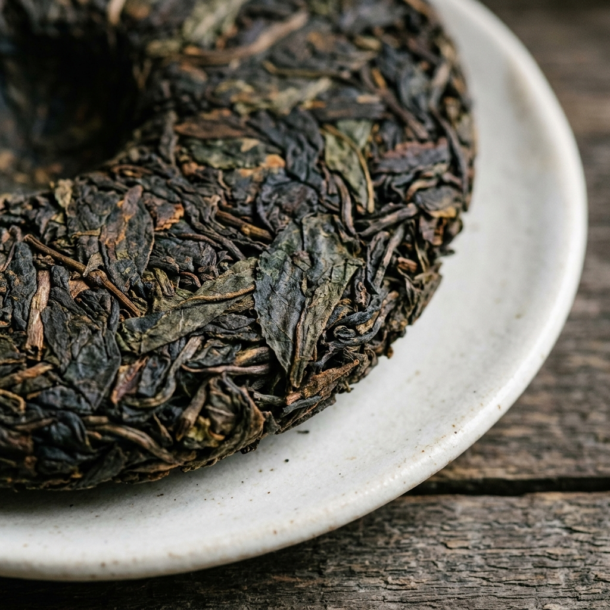
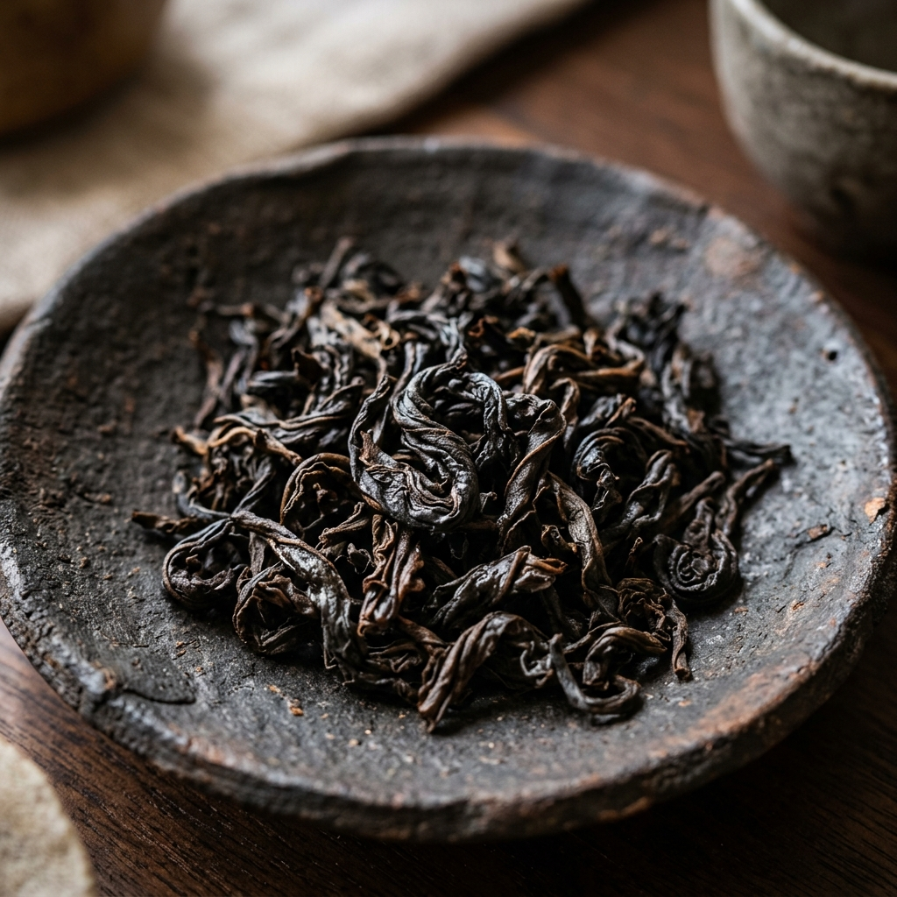
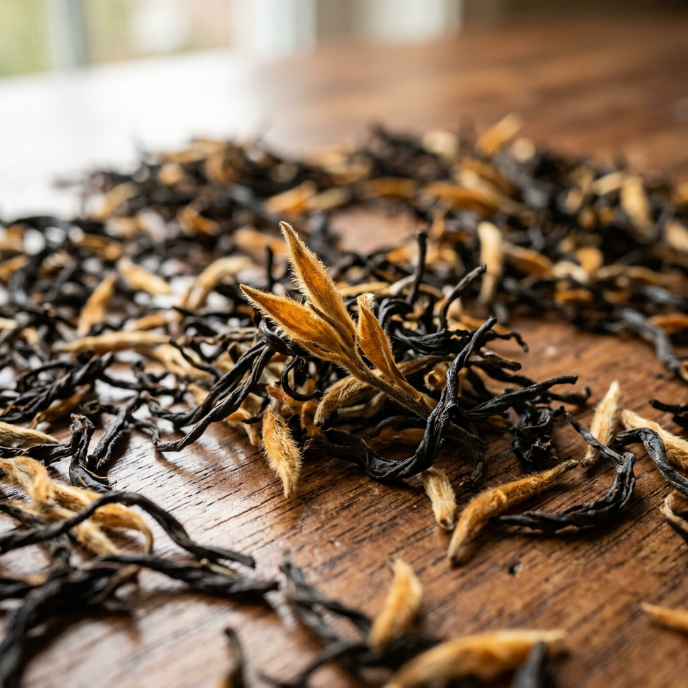
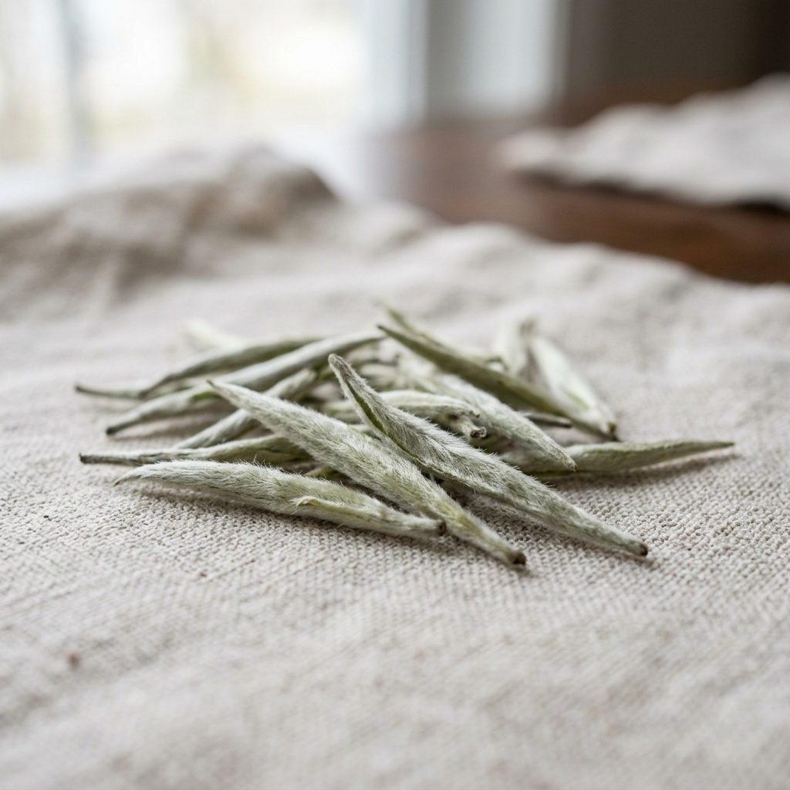
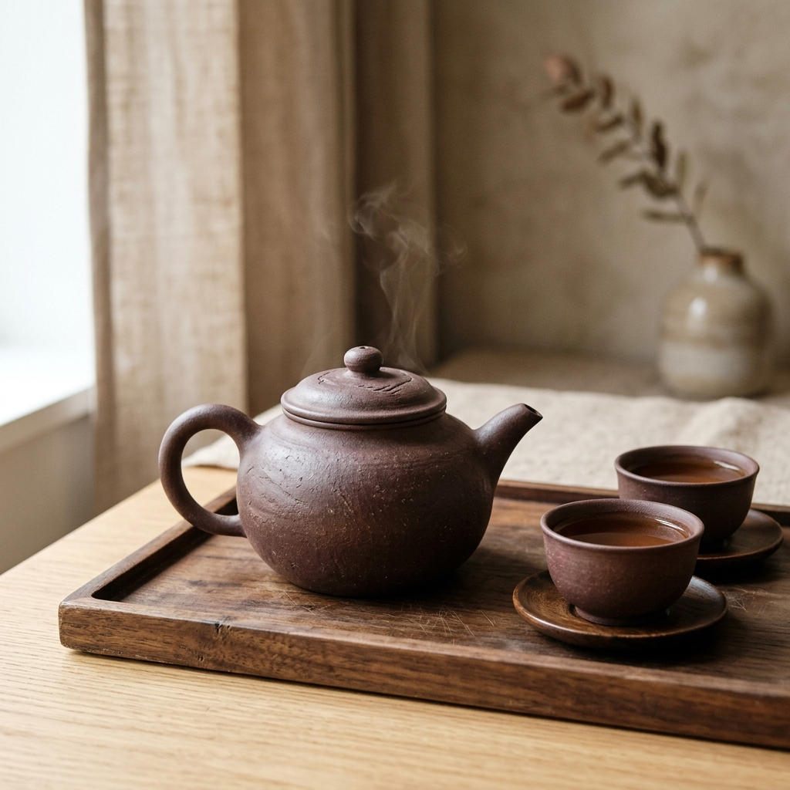

Чайний навігатор
Який стан ви шукаєте сьогодні?
Оберіть внутрішнє прагнення, і ми підберемо ідеальний сорт чаю, що резонує з вашим настроєм.
Лімітовані партії дикого збору, витримані колекційні пуери та прямий імпорт із прихованих від очей високогірних садів Китаю. Відчуйте спокій у кожній піалі.
Ідея бренду ДЖЕРЕЛО народилася під час моєї тривалої подорожі провінцією Юньнань. Спілкуючись із фермерами, які з покоління в покоління доглядають за столітніми чайними деревами, я зрозумів: чай — це не просто гастрономія. Це інструмент для знаходження внутрішнього спокою та балансу.
Ми не купуємо чай на масових ринках. Кожен лот, представлений у нашій колекції, відібраний особисто мною безпосередньо у майстрів ферментації. Ми хочемо поділитися цією чистотою, енергією та медитативним станом з кожним українським поціновувачем чаю.
Ми контролюємо кожен крок — від збору ніжних бруньок на туманних вершинах до вашого першого проливу.
Листя збирають рано-вранці, коли спадає роса, виключно на висоті понад 1500 метрів. Використовуються лише молоді весняні бруньки.
Свіже листя тонким шаром розкладають на бамбукових підносах на свіжому повітрі для випаровування надлишкової вологи.
Прогрів на дровах, фіксація зелені (Ша Цин) або багаторазове скручування — кожен сорт отримує свій автентичний характер.
Чай потрапляє у вашу герметичну порцелянову піалу, де під час церемонії Пин Ча розкриває свої ефірні олії та цілющі стани.
Чотири рідкісних сорти чаю вищого гатунку. Ми постачаємо чай у герметичних фарфорових ємностях, які надійно зберігають аромат.

Аутентичний шен пуер сухого пресування. Глубокий, щільний настій золотисто-бурштинового кольору з потужним тонізуючим ефектом Ча Ці (енергія чаю).

Класичний темний улун. Виготовляється за традиційною технологією повільного прогріву на деревному вугіллі, що дає неповторну «скельну мелодію».

Для створення одного кілограма цього чаю потрібно вручну зібрати близько 100 000 молодих чайних бруньок. Найтонший, оксамитовий медовий профіль.

Еталонний білий чай. Має надзвичайно легкий, освіжаючий смак та тривалий солодкуватий посмак. Містить рекордну кількість антиоксидантів.
Витончені інструменти для чайного дзен. Посуд виготовлений вручну майстрами з Ісіна та Цзіньдечженя з автентичної глини та порцеляни.

Автентична фіолетова глина Цзи Ша. Об'єм 120 мл. Ідеально напрацьовується під шу пуери та темні улуни, округлюючи смак.
Тонкостінна порцеляна з Цзіньдечженя. Об'єм 110 мл. Чистий білий колір дозволяє спостерігати за справжнім відтінком настою.
Дві піали по 45 мл. Унікальна градієнтна текстура золи від випалу в печі. Кожна піала має неповторний малюнок поверхні.
Оберіть внутрішнє прагнення, і ми підберемо ідеальний сорт чаю, що резонує з вашим настроєм.
Розкрийте повний потенціал чаю вищого гатунку за допомогою традиційного методу Пин Ча.
Використовуйте м'яку воду низької мінералізації. Білий чай заварюйте при 80-85°C, улуни — 90°C, а пуери потребують окропу (95-98°C).
Ополосніть гайвань або ісінський чайник гарячою водою. Засипте сухе листя, накрийте кришкою і зачекайте 10 секунд — тепло стінок розкриє перші ноти аромату.
Перший пролив злийте — він промиває лист. Наступні настоюйте всього 5–15 секунд. Кожен наступний пролив збільшуйте на 3-5 секунд. Наш чай витримує до 8-12 заварювань.
«Преміальний чай не любить спеки та великих чашок. Метод Пин Ча у невеликому посуді на 100-150 мл дозволяє зберегти ефірні олії та спостерігати еволюцію смаку. Чай розкриває свої грані поступово, даруючи спокійний та ясний стан розуму».
— Ярослав Джерело, чаєзнавець
Досвід людей, які вже долучилися до чайної культури разом із ДЖЕРЕЛО.
«Шен Пуер "Дикі Скелі" — це щось неймовірне. Чіткий камфорний аромат, потужний стан бадьорості. Настій тримає до 10 проливів без жодної гіркоти. Обслуговування на висоті, упаковано в порцелянову баночку!»
«Придбала тут порцелянову гайвань і білий чай Бай Хао Інь Чжень. Смак чаю дуже ніжний, квітково-солодкий. Посуд просто не хочеться випускати з рук, неймовірна естетика мінімалізму та дзену.»
«Да Хун Пао дійсно прогрітий на вугіллі, як у найкращих чайних домах Китаю. Хлібні та шоколадні тони розкриваються поступово. Дуже рекомендую спробувати метод Пин Ча з їхніми піалами.»
Все, що потрібно знати про оплату, доставку та зберігання нашого преміального чаю.
Ми відправляємо замовлення щодня за допомогою «Нової Пошти» (у відділення, поштомат або кур'єром) та «Укрпошти». Зазвичай доставка займає 1–2 робочих дні. Для замовлень від 2000 ₴ доставка безкоштовна.
Наш чай — це фермерський продукт Single Estate (з конкретного саду), зібраний вручну зі старих дерев на великій висоті. Він виготовляється лімітованими партіями чайними майстрами. Звичайний чай у супермаркетах — це промисловий купаж низької якості машинної збірки.
Чай потрібно зберігати у герметичній ємності (наш чай поставляється саме в таких баночках) у сухому темному місці без сторонніх запахів. Зелені та білі чаї краще зберігати у прохолоді, а пуери та улуни — при кімнатній температурі.
Наразі мы працюємо як інтернет-магазин із власною чайною студією в Києві (вул. Кожум'яцька, 12б). Ви можете замовити безкоштовний самовивіз або завітати до нас за попереднім записом на чайну сесію-дегустацію.
Раз на місяць ми привозимо унікальні мікро-лоти поза каталогом. Залиште свій email, щоб першими отримувати запрошення на закриті поставки та дегустації.